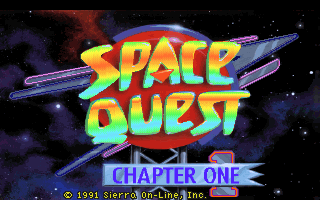
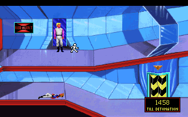

名稱：新宇宙傳奇 (Space Quest I: Roger Wilco in the Sarien Encounter，英文版)
簡介：Sierra 1990年出品的冒險解謎遊戲，由智冠代理進口，為1986年的「宇宙傳奇1」的
重製版，1994年收錄在「五合一（Collector's Edition）」光碟裡，2006年收錄在
「六合一（Collection）」光碟裡 [待補]。


保護：無
備註：進入遊戲若當死，請執行INSTALL.EXE調整音效卡（聲霸卡比較會有問題，建議Adlib）。
備註：磁片版和光碟合輯版內容幾乎沒什麼差別。